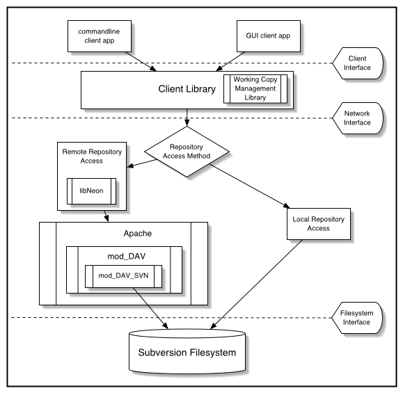

Status
Development Roadmap
Milestones are set as short timelines (around
three weeks), with a few key features. We will be doing plenty
of bug fixing and other work during the development towards a
milestone, but "meeting a milestone" requires the specified
features to have been implemented.
Upcoming:
-
Subversion 0.14.3 (Thu, 12 September): Interim
release; see issues marked with the "0.14.3" milestone.
-
Subversion 0.14.4 (Thu, 26 September): Interim
release; see issues marked with the "0.14.4" milestone.
-
Subversion 0.14.5 (TBD, mid October): Next interim
release, no issues assigned yet.
-
Beta (TBD): Release candidate, heavy testing. Possible
inclusion of newer, less popular features. Beta isn't
scheduled yet; we're just scheduling interim releases for
every two weeks or so, there's no compelling need to plan
beyond that yet.
-
1.0 Release (TBD): Release.
Done:
-
Subversion 0.14.2 (Thu, 22 August 2002): Interim
release; see issues marked with the "0.14.2" milestone.
-
Subversion 0.14.1 (9 Aug 2002):
Interim release after Alpha, mostly bugfixes, some feature
enhancements.
-
Alpha (Tuesday, 23 July 2002):
Most commonly used features completed. Freeze on major
new features.
-
Subversion 0.13.2 (28 June 2002):
Fixes to regression test suite, filesystem improvements,
bring win32 build up-to-date and allow configuration files
under Win32
(issue #579),
fix various command line client outputs
(issue #728),
add a man page, and of course the usual bug fixes.
-
Subversion 0.13.1 (20 June 2002): continuing the
wrap-up for Alpha.
module system
(issue #517),
client feedback system rewrite
(issue #662), copy history traversal in many commands, a
new svn export command, versioned headers and libs,
improved test framework, more SWIG work, the delta combiner,
and the usual round of bug fixes.
-
Subversion 0.13.0 (10 June 2002): Wrapping up
large work items in preparation for an Alpha release.
Primary issues fixed:
fs dump/load format
(issue #648);
new fs nodeID schema
(issue #654);
vsn-rsrc-urls use rev/path
(issue #652);
module system
(issue #517);
reporting deleted entries to the server
(issue #658);
eliminate skel_t usage
(issue #656).
-
Subversion 0.12 (3 May 2002):
Updates to handle disjoint working copies
(issue #663);
version the execute bit on files
(issue #522);
use text-base checksums in working copies
(issue #549);
fix bug in keyword expansion (issue #646);
various fixes/improvements to the versioning filesystem (issues
#648,
#651, and
#653, and
#654), improvements to svn diff and svn rm.
-
Subversion 0.11 (12 Apr 2002):
Commits to handle disjoint working copies
(issue #575);
use 3-way merge in updates;
access to repository via http proxy
(issue #579);
svn merge (issue #504);
various fixes for text editor invocation (issues
#638,
#633, and
#615).
- Subversion 0.10 (8 Mar 2002): usability,
reliability, and performance:
Delta-editor interface changes to promote better memory usage;
"streamy" writes into the FS (issue #412); better pool management overall;
clearer error messages; configuration improvements.
- Subversion 0.9 (18 Feb 2002):
"svn switch" (issue #575); resolution of some repository db stability
issues (issue
#608); and many small features and bugfixes since 0.8, all
praise to the Conquering Developer Hordes. See the
CHANGES
file for details.
- Subversion 0.8 (14 Jan 2002): Commit system rewrite (issue
#463); diffs over the network in both directions (issue
#518); newline conversion and keyword substitution (issue
#524); and code migration from libsvn_fs to libsvn_repos (issue
#428).
- Subversion 0.7 (3 Dec 2001): Branching and tagging.
- Subversion 0.6 (Milestone 6) (12 Nov 2001): Complete
"svn log", and have "svn mv",
"svn cp" working at least on files, with directory
support optional (for this milestone, that is, not in the long term).
- Milestones 4 and 5 (19 Oct 2001): These milestones
were reached together, and fix various bugs related to properties,
networking, and filesystem deltification.
- Milestone 3 (30 August 2001): Subversion is now
self-hosting; see the Project
Source page for details.
- Milestone 2 (15 May 2001): Rudimentary working filesystem;
client can checkout/update/commit using WebDAV layer.
- Milestone 1 (20 Oct 2000): Basic working copy manipulation;
client can checkout/update/commit using XML files.
The Big Picture
(taken from the design
document)
